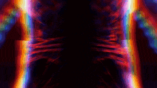

LEVEL UP
LEVEL UP
LEVEL UP
ARISE
CrossVerse(Beta)
Anime Crossover Inspired Fan Game
PLAY
SETTINGS
CREDITS
Choose Your Sorcerer
Character Select
← BACK
ENTER BATTLE
CLOSE
Toji Fushiguro
100 / 100
Weapon:
Split Soul Katana
Target Dummy
100 / 100
Status:
Normal
Controls
W A S D
— Move
SPACE
— Attack
SHIFT
— Dash Burst
Q / E
— Swap Weapons
G
— Awakening (meter full)
R
— Overlock (charge above 5%)
DASH
THE ONE WHO LEFT IT ALL BEHIND
0
[ G ] AWAKEN
OVERLOCK CHARGE
0%
SYSTEM SYNCHRONIZED
RESONANCE FLOW
0%
TIER I — STEADY GROUND
1
Flurry
2
Nullify
3
Chain
4
Mirage
Settings
CLOSE
-- FPS
WAVE 1
CHOOSE YOUR FATE
Choose Your Perk
Reveal All
Rerolls Remaining: 0
Reroll
PERKS FULL — 10 / 10
Choose an existing perk to replace with your new perk.
Keep Current Perks (Discard New)
Perks 0 / 10
[ TAB ] BUILD
RUN BUILD
Current Run Only — Not A Permanent Inventory
[ TAB ] CLOSE
YOU DIED
Play Again
Character Select
Main Menu